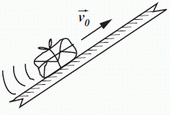

|
| |
NO ME SALEN
PROBLEMAS RESUELTOS DE FÍSICA DEL CBC
Rozamiento |
|
|

|
| |
42 - Se lanza un paquete hacia arriba, con
una velocidad de 3 m/s, por un tablón inclinado
con rozamiento no despreciable. El paquete sube
en línea recta hasta detenerse, y regresa luego al
punto de partida. Asciende durante 2 segundos,
y desciende durante 4 segundos.
Calcular: |
 |
a) La aceleración que actúa en el ascenso, y la
distancia que recorre sobre el plano, hasta detenerse.
b) Con qué aceleración desciende, y la velocidad
con que llega al lugar de partida.
c) Sabiendo que la masa del paquete es de
20 kg, determinar la intensidad de la fuerza de
rozamiento contra el plano, mientras está en movimiento.
Hallar el ángulo de inclinación del plano y
el coeficiente de rozamiento dinámico respectivo.
|
Te conviene tener presente el ejercicio 3.16, en el que resolvimos la cinemática de este paquete que sube y baja por un plano inclinado con aceleraciones diferentes: durante la subida la aceleración valía ai = 1,5 m/s², y durante la bajada av = 0,375 m/s²; el motivo del cambio de aceleración es que durante la ida la fuerza de rozamiento tiraba para abajo, en cambio, a la vuelta la fuerza de rozamiento apuntaba hacia arriba.
Hagamos los DCL y lo vas a entender. Primero va el de subida: |

el 3.16 de
cinemática |
 |
Acá tenés. El rozamiento, Roz, que como te das cuenta es de tipo dinámico, depende de la fuerza que aprieta las superficies en contacto (paquete y plano) y del coeficiente de rozamiento entre ambas. Y de nada más. De modo que tanto cuando sube como cuando baja, la fuerza de rozamiento valdrá lo mismo, sólo que apuntará en sentido contrario. Ya volveremos.
Para poder aplicar Newton tenemos que elegir un SR (ya está marcado) y descomponer las fuerzas que no coincidan con las direcciones del SR elegido (lo hice abajo). Por si no te acordás cómo se descompone un vector, te voy a ayudar con un esquemita acá a la derecha.
Vamos a las ecuaciones. Empezamos por la dirección paralela al plano.
ΣFx = m ax = m ai
Hay dos fuerzas en esa dirección
— Px — Roz = m ai
Ahora vamos con la dirección normal al plano
ΣFy = m ay = 0
N — Py = 0
|
|
|

Px = P sen α
Py = P cos α
|
Acá se acaba Newton, pero nos queda una ecuación más por plantear, ya que conocemos la naturaleza de la fuerza de rozamiento y sabemos que
Roz = μd . N
Ya con esto alcanza (si querés contar ecuaciones e incógnitas... no es mala idea). Vamos al álgebra.
— P sen α — Roz = m ai
— P sen α — μd . N = m ai
— P sen α — μd . P cos α = m ai
— m g sen α — μd . m g cos α = m ai
la masa del paquete no importa y además la podemos cancelar:
— g sen α — μd . g cos α = ai
ai = — g sen α — μd . g cos α
|
|
|
| |
— 1,5 m/s² = — g sen α — g μd cos α |
|
|
|
|
Ahora vamos a la bajada, la aceleración de vuelta. |
|
|
 |
Con el mismo sistema de referencia, lo único que va a cambiar respecto del planteo y el desarrollo anterior es el signo de la fuerza de rozamiento.
— P sen α + Roz = m av
— P sen α + μd . N = m av
— P sen α + μd . P cos α = m av
— m g sen α + μd . m g cos α = m av
cancelamos la masa, igual que hicimos antes, y:
— g sen α + μd . g cos α = av
|
— 0,375 m/s² = — g sen α + g μd cos α |
Ese valor, — 0,375 m/s², es el que tenemos del problema de cinemática, igual que el anterior.
Ahora, si mirás las dos ecuaciones que recuadré en amarillo verás que tienen dos incógnitas, que no son otras que las que nos pide el enunciado del ejercicio, de modo que operando algebraicamente con ellas debemos llegar a las respuestas. Manos a la obra. |
|
|
|
Si las sumo miembro a miembro desaparece el segundo término, ya que una vez aparece sumando y la otra restando:
— 1,875 m/s² = — 2 g sen α
sen α = 1,875 m/s² / 2 g
|
|
|
|
|
|
Si en lugar de sumar restamos miembro a miembro se cancela el primer término:
1,125 m/s² = 2 g μd cos α
μd = 1,125 m/s² / 2 g cos α
|
|
|
|
|
|
Ahora, con esta información, podemos ir a la ecuación de la fuerza de rozamiento, y sabiendo la masa del paquete...
Roz = μd N
Roz = μd m g cos α
|
|
|
|
|
|
Terminamos. Por supuesto que se puede resolver de modo mucho más resumido y sintético, pero vos sabés que soy detallista y parsimonioso. |
|
 |
| DESAFIO: ¿Por qué tiene diferente aceleración durante la subida y la bajada? |
|
| Todos los derechos sobre el paquete reservados.
El paquete se autodestruirá si se intenta calcular su aceleración con una fórmula complementaria. Evite esparcir su contenido stencriptomórfico. Última actualización may-08. Buenos Aires, Argentina. |
|
|
|